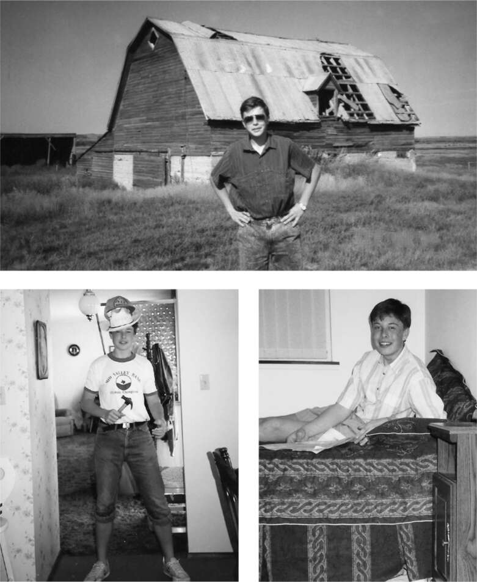

Người nhập cư
Có một câu chuyện được thêu dệt rằng Musk, vì cha anh thỉnh thoảng thành công trong kinh doanh, đã đến Bắc Mỹ vào năm 1989 với rất nhiều tiền, có lẽ túi đầy ngọc lục bảo. Errol đôi khi cũng góp phần củng cố nhận thức đó. Nhưng thực tế, những gì Errol kiếm được từ mỏ ngọc lục bảo Zambia đã trở nên vô giá nhiều năm trước. Khi Elon rời Nam Phi, cha anh đưa cho anh 2.000 đô la bằng séc du lịch và mẹ anh đưa thêm 2.000 đô la bằng cách rút tiền từ tài khoản chứng khoán mà bà đã mở bằng số tiền thắng được trong một cuộc thi sắc đẹp khi còn trẻ. Ngoài ra, thứ mà anh chủ yếu mang theo khi đến Montreal là danh sách những người họ hàng bên mẹ mà anh chưa từng gặp.
Anh định gọi cho chú của mẹ, nhưng phát hiện ra ông đã rời Montreal. Vì vậy, anh đến một nhà trọ dành cho thanh niên, nơi anh ở chung phòng với năm người khác. "Tôi đã quen với Nam Phi, nơi mọi người có thể cướp và giết bạn," anh nói. "Vì vậy, tôi ngủ trên ba lô của mình cho đến khi nhận ra rằng không phải ai cũng là kẻ giết người." Anh lang thang khắp thị trấn và ngạc nhiên rằng mọi người không có song sắt ở cửa sổ.
Sau một tuần, anh mua một vé xe buýt Greyhound Discovery Pass trị giá 100 đô la cho phép anh đi xe buýt đến bất cứ đâu ở Canada trong sáu tháng. Anh có một người anh họ thứ hai bằng tuổi, Mark Teulon, sống trong một trang trại ở tỉnh Saskatchewan không xa Moose Jaw, nơi ông bà anh từng sống, vì vậy anh đã đến đó. Nơi này cách Montreal hơn 2.700 km.
Chiếc xe buýt, dừng lại ở mỗi làng nhỏ, mất nhiều ngày để đi khắp Canada. Tại một điểm dừng, anh xuống xe để tìm bữa trưa và, ngay khi xe buýt sắp rời đi, anh chạy vội lên xe. Thật không may, tài xế đã lấy chiếc vali chứa séc du lịch và quần áo của anh. Tất cả những gì anh còn lại là chiếc ba lô sách mà anh luôn mang theo bên mình. Khó khăn trong việc đổi séc du lịch (mất vài tuần) là một trải nghiệm sớm về việc hệ thống thanh toán tài chính cần được cải thiện.
Khi đến thị trấn gần trang trại của anh họ mình, anh dùng một ít tiền lẻ trong túi để gọi điện. "Chào, Elon đây, anh họ của cậu từ Nam Phi," anh nói. "Tôi đang ở bến xe buýt." Người anh họ xuất hiện cùng cha mình, đưa anh đến một nhà hàng bít tết Sizzler và mời anh ở lại trang trại lúa mì của họ, nơi anh được giao nhiệm vụ dọn dẹp kho thóc và giúp dựng một nhà kho. Ở đó, anh đã tổ chức sinh nhật lần thứ mười tám của mình với một chiếc bánh mà họ nướng có dòng chữ "Chúc mừng sinh nhật Elon" được viết bằng kem sô cô la.
Sau sáu tuần, anh lại lên xe buýt và đi Vancouver, cách đó cả ngàn dặm, để sống cùng người anh cùng mẹ khác cha. Khi đến văn phòng giới thiệu việc làm, anh thấy hầu hết các công việc đều trả 5 đô la một giờ. Nhưng có một công việc trả 18 đô la một giờ, đó là làm sạch nồi hơi trong xưởng gỗ. Công việc này đòi hỏi phải mặc đồ bảo hộ và chui qua một đường hầm nhỏ dẫn đến buồng đun bột gỗ, đồng thời xúc hết lớp vôi bám trên tường. "Nếu người ở cuối đường hầm không loại bỏ lớp vôi đủ nhanh, bạn sẽ bị mắc kẹt trong khi mồ hôi vã ra như tắm," anh nhớ lại. "Nó giống như một cơn ác mộng đen tối kiểu Dickensian đầy những đường ống tối tăm và tiếng búa khoan."
Trong khi Elon ở Vancouver, Maye Musk đã bay từ Nam Phi đến, sau khi quyết định rằng bà cũng muốn chuyển đi. Bà gửi báo cáo khảo sát về cho Tosca. Vancouver quá lạnh và mưa, bà viết. Montreal thì sôi động, nhưng người dân ở đó nói tiếng Pháp. Toronto, bà kết luận, là nơi họ nên đến. Tosca nhanh chóng bán nhà và đồ đạc ở Nam Phi, sau đó cô đến Toronto cùng mẹ, nơi Elon cũng chuyển đến. Kimbal ở lại Pretoria để hoàn thành năm cuối trung học.
Lúc đầu, tất cả họ sống trong một căn hộ một phòng ngủ, Tosca và mẹ ngủ chung giường còn Elon ngủ trên ghế sofa. Tiền bạc rất eo hẹp. Maye nhớ lại đã khóc khi làm đổ sữa vì không đủ tiền mua thêm.
Tosca xin được việc tại một quán hamburger, Elon thực tập tại văn phòng Microsoft ở Toronto, còn Maye làm việc tại trường đại học, một công ty người mẫu và tư vấn dinh dưỡng. "Tôi làm việc mỗi ngày và cả bốn đêm một tuần," bà nói. "Tôi chỉ nghỉ một buổi chiều Chủ nhật để giặt giũ và mua đồ tạp hóa. Tôi thậm chí còn không biết các con mình đang làm gì, vì tôi hầu như không ở nhà."
Sau vài tháng, họ kiếm đủ tiền để thuê một căn hộ ba phòng ngủ có kiểm soát giá thuê. Căn hộ có giấy dán tường cũ, Maye nhất quyết bắt Elon bóc ra, và một tấm thảm kinh khủng. Họ định mua một tấm thảm thay thế với giá 200 đô la, nhưng Tosca khăng khăng mua một tấm dày hơn với giá 300 đô la vì Kimbal và người anh họ Peter sẽ đến ở cùng và ngủ trên sàn nhà. Món đồ lớn thứ hai họ mua là một chiếc máy tính cho Elon.
Anh không có bạn bè hay đời sống xã hội ở Toronto, và anh dành phần lớn thời gian để đọc sách hoặc làm việc trên máy tính. Ngược lại, Tosca là một cô gái tuổi teen sôi nổi, thích ra ngoài. "Anh đi cùng em," Elon sẽ tuyên bố, vì không muốn cô đơn. "Không, anh không đi đâu," cô sẽ trả lời. Nhưng khi anh khăng khăng, cô ra lệnh, "Anh phải đứng cách xa em mười bước mọi lúc." Anh đã làm vậy. Anh sẽ đi theo sau cô và bạn bè của cô, mang theo một cuốn sách để đọc bất cứ khi nào họ vào câu lạc bộ hoặc bữa tiệc.

Tại kho thóc của anh họ ở Saskatchewan và trong phòng ngủ của anh ấy ở Toronto